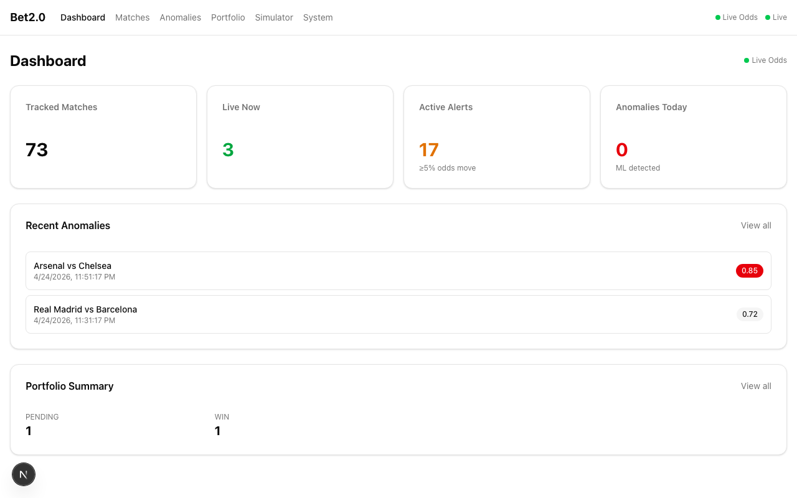
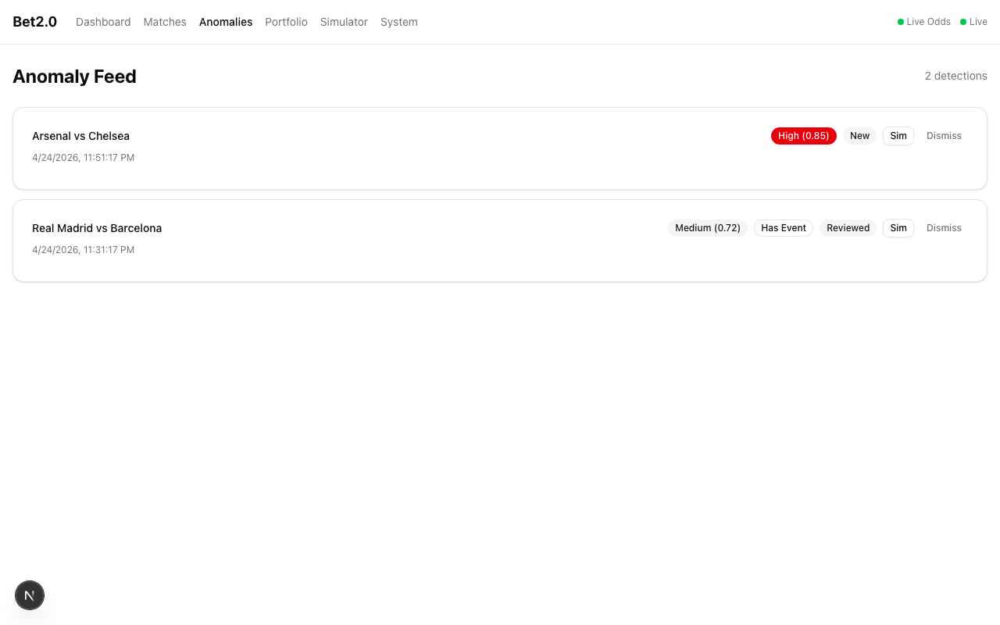
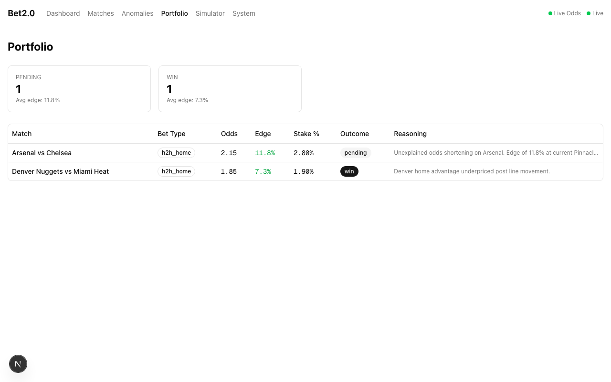
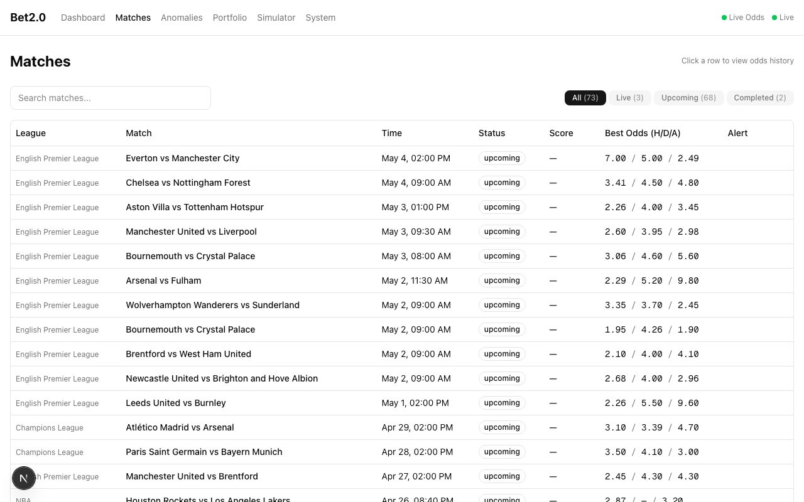
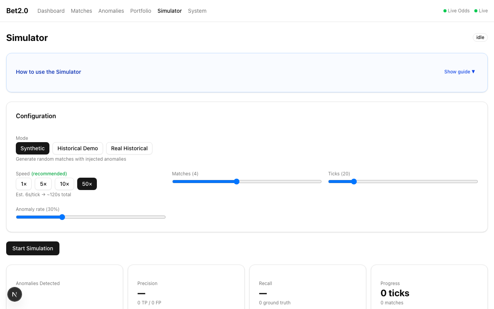
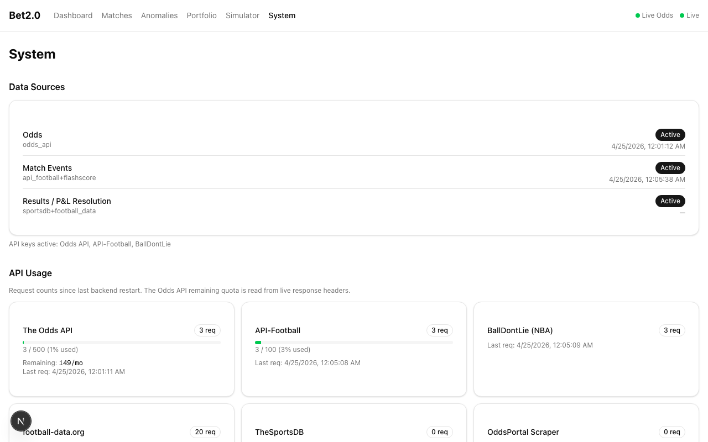

How it works
Step 1
Ingest live odds
Polls The Odds API every 5 minutes across EPL, Champions League, and NBA. Stores all snapshots in TimescaleDB.
Step 2
Detect anomalies
Isolation Forest scores each movement; Bayesian changepoint confirms structural breaks. Correlated with live match events within a 5-minute window.
Step 3
Explain with Claude
Claude (Anthropic API) generates a plain-language summary of each detection — what moved, why it might be unusual, what to check.
Step 4
Size positions
Half-Kelly bet sizing with edge calculations. Portfolio tracks open positions and resolves outcomes automatically.
Screenshots
Dashboard — 73 tracked matches, 3 live, 17 active alerts

Anomaly Feed — scored detections

Portfolio — Kelly-sized positions

Matches — real EPL / Champions League / NBA with live best odds

Simulator — 3 backtesting modes

System — live data sources

Tech stack
| Layer | Stack |
|---|---|
| Backend | FastAPI Python 3.11 SQLModel asyncpg APScheduler |
| ML | scikit-learn (Isolation Forest) SciPy (Bayesian changepoint) |
| Database | PostgreSQL 16 TimescaleDB |
| Frontend | Next.js 15 TypeScript Tailwind CSS Recharts WebSocket |
| AI | Claude API (Anthropic) |
| Infra | Docker Compose |